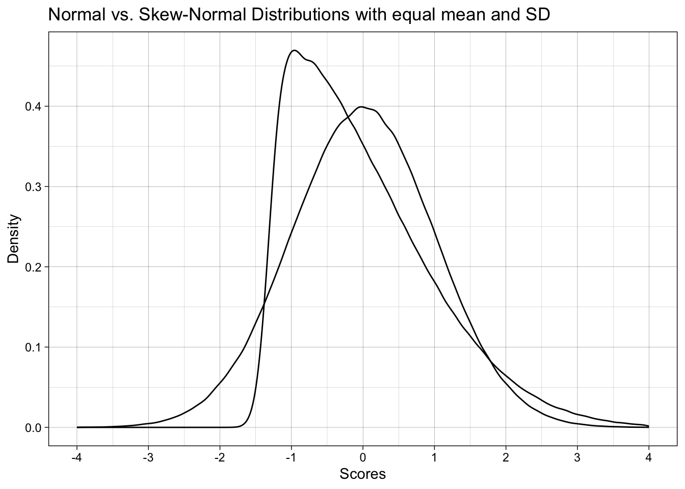

library(tidyr)
library(dplyr)
library(purrr)
library(furrr)
library(forcats)
library(ggplot2)
library(scales)
library(sn)
library(janitor)
library(effsize)
# set up parallelization
plan(multisession)13 Assessing the impact of violating the assumption of normality ✎ Rough draft
13.1 Dependencies
13.2 Skew-normal distributions
In order to violate normality, we will need to use a different non-normal distribution. For this example we’ll use the skew-normal distribution. Where the normal distribution of defined by two parameters, mean and standard deviation, other distributions are controlled by other parameters with different naming conventions, and often more than two parameters.
The skew-normal distribution is defined by:
- ‘location’, akin to mean, is controlled via the parameter \(\xi\), i.e., ‘xi’ in
sn(). In fact, mean is referred to as ‘location’ in many distributions. - ‘scale’, akin to SD, is controlled via the parameter \(\omega\), i.e., ‘omega’ in
sn(). Likewise, ‘scale’ is a common way of referring to measures of dispersion like SD. - ‘slant’/‘skew’, is controlled via parameter \(\alpha\), i.e., ‘alpha’ in
sn().
Note that when alpha = 0, skew-normal data is the same as normal data:
mu <- 0 # population mean
sigma <- 1 # population standard deviation
skew <- 12 # skewness parameter
# convert m, sd, and skewness into skew-normal parameters scale, location, and alpha (skew)
delta_val <- skew / sqrt(1 + skew^2) # delta is an intermediate value
scale_val <- sigma / sqrt(1 - 2 * delta_val^2 / pi)
location_val <- mu - scale_val * delta_val * sqrt(2 / pi)
# generate data
set.seed(42)
sample_size <- 1000000
data_combined <- tibble(
normal = rnorm(n = sample_size,
mean = mu,
sd = sigma),
skewnormal = rsn(n = sample_size,
xi = location_val,
omega = scale_val,
alpha = skew)
)
# table
data_combined |>
summarize(mean_normal = mean(normal),
mean_skewnormal = mean(skewnormal),
sd_normal = sd(normal),
sd_skewnormal = sd(skewnormal)) |>
mutate_if(is.numeric, round_half_up, digits = 2)| mean_normal | mean_skewnormal | sd_normal | sd_skewnormal |
|---|---|---|---|
| 0 | 0 | 1 | 1 |
# plot
ggplot(data_combined) +
geom_density(aes(x = normal)) +
geom_density(aes(x = skewnormal)) +
labs(x = "Scores",
y = "Density",
title = "Normal vs. Skew-Normal Distributions with equal mean and SD") +
scale_x_continuous(breaks = breaks_pretty(n = 9), limits = c(-4, 4)) +
theme_linedraw()
13.2.1 Math for converting normal parameters + skew to skew-normal parameters
You don’t to understand the following math, but here is is for nerds.
The parameters that define normal data, i.e., population mean (\(\mu\)) and population SD (\(\sigma\)) plus a skew parameter (\(\alpha\)) can be converted to the parameters that directly define a skew-normal distribution, location (\(\xi\)), scale (\(\omega\)), and skew (\(\alpha\)).
The intermediate variable \(\delta\) is calculated from skew (\(\alpha\)):
\[ \delta = \frac{\alpha}{\sqrt{\,1 + \alpha^2\,}} \]
Scale (\(\omega\)) is calculated from \(\delta\) and skew (\(\alpha\)):
\[ \omega = \frac{\sigma}{\sqrt{\,1 \;-\; \frac{2\,\delta^2}{\pi}\,}} \]
Location (\(\xi\)) is calculated from population mean (\(\mu\)), scale (\(\omega\)), and skew (\(\alpha\)).
\[ \xi = \mu \;-\; \omega \,\delta \,\sqrt{\frac{2}{\pi}} \]
13.3 1. Impact of non-normality on the t-test’s false-positive rate
13.3.1 Data generation function
# define data generating function ----
generate_data <- function(n_control,
n_intervention,
location_control, # location, akin to mean
location_intervention,
scale_control, # scale, akin to SD
scale_intervention,
skew_control, # slant/skew. When 0, produces normal/gaussian data
skew_intervention) {
data_control <-
tibble(condition = "control",
score = rsn(n = n_control,
xi = location_control, # location, akin to mean
omega = scale_control, # scale, akin to SD
alpha = skew_control)) # slant/skew. When 0, produces normal/gaussian data
data_intervention <-
tibble(condition = "intervention",
score = rsn(n = n_intervention,
xi = location_intervention, # location, akin to mean
omega = scale_intervention, # scale, akin to SD
alpha = skew_intervention)) # slant/skew. When 0, produces normal/gaussian data
data <-
bind_rows(data_control,
data_intervention) |>
# order the levels of condition correctly so that the direction of cohens d is correct
mutate(condition = fct_relevel(condition, "intervention", "control"))
return(data)
}13.3.2 Analysis function
# define data analysis function ----
analyze <- function(data) {
res_t_test <- t.test(formula = score ~ condition,
data = data,
var.equal = TRUE,
alternative = "two.sided")
res_cohens_d <- cohen.d(formula = score ~ condition,
data = data,
pooled = TRUE)
res <- tibble(p = res_t_test$p.value,
cohens_d = res_cohens_d$estimate)
return(res)
}13.3.3 Simulation parameters
13.3.3.1 Exercise - setting up the experiment correctly
We want to construct a simulation where the skew parameter is either 0 or 12 AND for the skew parameter to be the same in both conditions: both 0 or both 12.
This presents a problem for our expand_grid call. Why? That is, what is wrong with the below code? How would we fix it?
This is an important lesson in thinking carefully about how you set up a simulation and whether it does what you intend it to.
# define experiment parameters ----
experiment_parameters <- expand_grid(
n_control = 100,
n_intervention = 100,
mu_control = 0,
mu_intervention = 0,
sigma_control = 1,
sigma_intervention = 1,
skew_control = c(0, 12),
skew_intervention = c(0, 12),
iteration = 1:1000
) 13.3.3.2 Solution
# define experiment parameters ----
experiment_parameters <- expand_grid(
n_control = 100,
n_intervention = 100,
mu_control = 0,
mu_intervention = 0,
sigma_control = 1,
sigma_intervention = 1,
skew_control = c(0, 12),
iteration = 1:1000
) |>
mutate(skew_intervention = skew_control)
# do some sanity checks on the experiment's grid
experiment_parameters |>
count(skew_control, skew_intervention)| skew_control | skew_intervention | n |
|---|---|---|
| 0 | 0 | 1000 |
| 12 | 12 | 1000 |
13.3.3.3 Experiment parameters
I have added the normal-to-skew-normal parameter conversions and the convenience variables.
# define experiment parameters ----
experiment_parameters <- expand_grid(
n_control = 100,
n_intervention = 100,
mu_control = 0,
mu_intervention = 0,
sigma_control = 1,
sigma_intervention = 1,
skew_control = c(0, 12),
iteration = 1:1000
) |>
mutate(skew_intervention = skew_control) |>
# make an intuitive label for the conditions
mutate(distribution = case_when(skew_intervention == 0 ~ "Normal data",
skew_intervention == 12 ~ "Skew-Normal data")) |>
# calculate skew-normal parameters
# don't worry about the math, it's not important to understand
mutate(delta_control = skew_control / sqrt(1 + skew_control^2),
delta_intervention = skew_intervention / sqrt(1 + skew_intervention^2),
scale_control = sigma_control / sqrt(1 - 2 * delta_control^2 / pi),
scale_intervention = sigma_intervention / sqrt(1 - 2 * delta_intervention^2 / pi),
location_control = mu_control - scale_control * delta_control * sqrt(2 / pi),
location_intervention = mu_intervention - scale_intervention * delta_intervention * sqrt(2 / pi)) 13.3.4 Run simulation
# set the seed ----
set.seed(42)
# run simulation ----
simulation <-
# using the experiment parameters
experiment_parameters |>
# generate data using the data generating function and the parameters relevant to data generation
mutate(generated_data = pmap(list(n_control,
n_intervention,
location_control,
location_intervention,
scale_control,
scale_intervention,
skew_control,
skew_intervention),
generate_data)) |>
# apply the analysis function to the generated data using the parameters relevant to analysis
mutate(analysis_results = pmap(list(generated_data),
analyze))13.3.5 Summarize results
Summarize the proportion of significant p-values, i.e., the false positive rate, since population difference in locations in zero.
Quick check on your own learning: When would this proportion not represent the false positive rate?
# summarise simulation results over the iterations ----
simulation_summary <- simulation |>
unnest(analysis_results) |>
group_by(distribution) |>
summarize(proportion_significant = mean(p < .05))
# print table
# note: only ever do rounding at the point of printing results!
simulation_summary |>
mutate_if(is.numeric, janitor::round_half_up, digits = 2) | distribution | proportion_significant |
|---|---|
| Normal data | 0.04 |
| Skew-Normal data | 0.04 |
- What does this tell us?
- What does this not tell us?
- If we want to understand why violating the assumption of normality might be bad, what else can we do?
13.4 2. Impact of non-normality on the t-test’s false-positive and true-positive (power) rates
13.4.1 Simulation parameters
13.4.1.1 Exercise
How would we modify the parameters to study not only the false-positive rate but also the true positive rate?
# define experiment parameters ----
experiment_parameters <- expand_grid(
n_control = 100,
n_intervention = 100,
mu_control = 0,
mu_intervention = 0,
sigma_control = 1,
sigma_intervention = 1,
skew_control = c(0, 12),
iteration = 1:1000
) |>
mutate(skew_intervention = skew_control) |>
# make an intuitive label for the conditions
mutate(distribution = case_when(skew_intervention == 0 ~ "Normal data",
skew_intervention == 12 ~ "Skew-Normal data"),
population_effect_size = paste("Cohen's d =", mu_intervention)) |>
# calculate skew-normal parameters
# don't worry about the math, it's not important to understand
mutate(delta_control = skew_control / sqrt(1 + skew_control^2),
delta_intervention = skew_intervention / sqrt(1 + skew_intervention^2),
scale_control = sigma_control / sqrt(1 - 2 * delta_control^2 / pi),
scale_intervention = sigma_intervention / sqrt(1 - 2 * delta_intervention^2 / pi),
location_control = mu_control - scale_control * delta_control * sqrt(2 / pi),
location_intervention = mu_intervention - scale_intervention * delta_intervention * sqrt(2 / pi)) 13.4.1.2 Solution
# define experiment parameters ----
experiment_parameters <- expand_grid(
n_control = 100,
n_intervention = 100,
mu_control = 0,
mu_intervention = c(0, 0.5), # multiple location values
sigma_control = 1,
sigma_intervention = 1,
skew_control = c(0, 12),
iteration = 1:1000
) |>
mutate(skew_intervention = skew_control) |>
# make an intuitive label for the conditions
mutate(distribution = case_when(skew_intervention == 0 ~ "Normal data",
skew_intervention == 12 ~ "Skew-Normal data"),
population_effect_size = paste("Cohen's d =", mu_intervention)) |>
# calculate skew-normal parameters
# don't worry about the math, it's not important to understand
mutate(delta_control = skew_control / sqrt(1 + skew_control^2),
delta_intervention = skew_intervention / sqrt(1 + skew_intervention^2),
scale_control = sigma_control / sqrt(1 - 2 * delta_control^2 / pi),
scale_intervention = sigma_intervention / sqrt(1 - 2 * delta_intervention^2 / pi),
location_control = mu_control - scale_control * delta_control * sqrt(2 / pi),
location_intervention = mu_intervention - scale_intervention * delta_intervention * sqrt(2 / pi)) 13.4.2 Run simulation
Exactly the same as last time, only parameters differ.
# set the seed ----
set.seed(42)
# run simulation ----
simulation <-
# using the experiment parameters
experiment_parameters |>
# generate data using the data generating function and the parameters relevant to data generation
mutate(generated_data = pmap(list(n_control,
n_intervention,
location_control,
location_intervention,
scale_control,
scale_intervention,
skew_control,
skew_intervention),
generate_data)) |>
# apply the analysis function to the generated data using the parameters relevant to analysis
mutate(analysis_results = pmap(list(generated_data),
analyze))13.4.3 Summarize results
Summarize the proportion of significant p-values, i.e., the false positive rate, since population difference in locations in zero.
13.4.3.1 Exercise
How do we need to modify the summarization compared to last time? Modify the below code.
# summarise simulation results over the iterations
simulation_summary <- simulation |>
unnest(analysis_results) |>
group_by(distribution) |>
summarize(proportion_significant = mean(p < .05))
# note: only ever do rounding at the point of printing results!
simulation_summary |>
mutate_if(is.numeric, janitor::round_half_up, digits = 2) | distribution | proportion_significant |
|---|---|
| Normal data | 0.49 |
| Skew-Normal data | 0.49 |
13.4.3.2 Solution
Show solution
# summarise simulation results over the iterations ----
simulation_summary <- simulation |>
unnest(analysis_results) |>
# group_by ALL the manipulated factors
group_by(distribution, population_effect_size) |>
summarize(proportion_significant = mean(p < .05))
# note: only ever do rounding at the point of printing results!
simulation_summary |>
mutate_if(is.numeric, janitor::round_half_up, digits = 2)| distribution | population_effect_size | proportion_significant |
|---|---|---|
| Normal data | Cohen’s d = 0 | 0.04 |
| Normal data | Cohen’s d = 0.5 | 0.94 |
| Skew-Normal data | Cohen’s d = 0 | 0.04 |
| Skew-Normal data | Cohen’s d = 0.5 | 0.93 |
- What does this tell us?
- What does this not tell us?
- If we want to understand why violating the assumption of normality might be bad, what else can we do?
13.5 3. Impact of non-normality on the t-test’s false-positive and true-positive (power) rates and estimates of Cohens’s d
As well as the false-positive and false-negative rate of the t-test’s p-values, we could also examine the estimates of standardized effect size.
13.5.1 Summarize results
We can summarize the results of the previous simulation differently, by adding Cohen’s d too.
# summarise simulation results over the iterations ----
simulation_summary <- simulation |>
unnest(analysis_results) |>
# group by ALL the manipulated factors
group_by(distribution,
population_effect_size) |>
summarize(proportion_significant = mean(p < .05),
cohens_d = mean(cohens_d)) |>
select(distribution,
population_effect_size,
cohens_d,
proportion_significant)
# table
simulation_summary |>
mutate_if(is.numeric, janitor::round_half_up, digits = 2) | distribution | population_effect_size | cohens_d | proportion_significant |
|---|---|---|---|
| Normal data | Cohen’s d = 0 | 0.0 | 0.04 |
| Normal data | Cohen’s d = 0.5 | 0.5 | 0.94 |
| Skew-Normal data | Cohen’s d = 0 | 0.0 | 0.04 |
| Skew-Normal data | Cohen’s d = 0.5 | 0.5 | 0.93 |
- The false-positive and false-negative rates of the t-test’s p-value are maintained when data is skewed.
- The effect size recovery is maintained when data is skewed.
So, why do we care about the assumption of normality for a t-test if violating it in these ways doesn’t substantially change much?
13.6 At-home exercises
13.6.1 Collate the final simulation above into a single code chunk with all the pieces to run the full simulation
# remove all objects from environment to ensure you're starting from a blank page
rm(list = ls())
# paste necessary code in here13.6.2 Elaborate the simulation
Right now the simulation only examines a fixed sample size. Perhaps the supposed negative impact of violating normality would be seen at other sample sizes? Vary this or indeed other things to understand when violating normality matters. If you wanted to get more complex, examine the impact of using another distribution other than skew normal that still has knowable population means and SDs, such as a bounded uniform distribution.
13.6.3 Develop a simulation to examine the impact of violating other statistical assumptions
The Student’s t-test also assumes equal variances between the samples (var.equal = TRUE), whereas the Welches’ t-test does not (var.equal = FALSE). Using just normal data, and varying between experimental conditions whether the SDs are equal or unequal, how much does violating the Student’s t-test undermine its false-positive or false-negative (power) rates? Does using a Welches’ t-test resolve this? If so, what are the downsides of Welches’ t-test, i.e., why don’t we use it by default?
Note that this isn’t a trivial exercise, it would take you some time to answer. People have published papers on these exact questions (Delacre, Lakens and Leys, 2017).